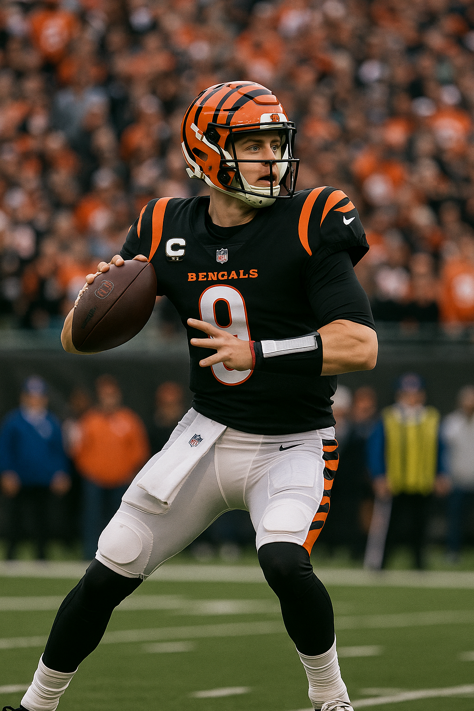

First Official Play of the 2025 Season: Bengals vs. Eagles
Posted: August 7, 2025, 2:36 PM
Welcome to the first official BetLegend play of the 2025 NFL season. While many bettors wait for the regular season, some of the biggest edges can be found in the preseason, where information and motivation trump raw team talent. Tonight, we have a classic preseason angle that we're excited to exploit.
The Official Play: Cincinnati Bengals First Half -6
We are backing the Bengals to cover a 6-point spread in the first half of their matchup against the Philadelphia Eagles. The rationale is based entirely on the declared intentions and philosophies of the two coaching staffs for this specific game.
Why Bet a Preseason Game? The Rationale
- A Tale of Two Motivations: The core of this handicap is simple: the Bengals are playing to prepare, while the Eagles are playing to evaluate. Bengals head coach Zac Taylor has explicitly stated that his starters, including Joe Burrow and the first-team offense, will play "several series." This is a direct response to the team's slow starts in recent regular seasons (starting 0-2 in three straight years), a trend they are clearly motivated to break.
- Eagles Resting Key Players: Conversely, Eagles coach Nick Sirianni has a well-established history of resting his starters in preseason games. Coming off a Super Bowl-winning season, there is zero incentive for them to risk injury to Jalen Hurts or other key contributors. Their goal is to evaluate depth and make final roster cuts, meaning the Bengals' starters will be facing the Eagles' backups.
- A Pure Mismatch: For the first 30 minutes of this game, we expect to see a motivated Bengals first-team unit looking to execute and build rhythm against an Eagles squad comprised of second and third-stringers fighting for a roster spot. This is the most significant talent and execution mismatch you will find on an NFL field all year.
The Verdict: This isn't a bet on the Bengals being the better overall team in a vacuum. It is a strategic wager on a motivated, high-powered starting unit to build a comfortable lead against backups in a 30-minute window. We are isolating the portion of the game where our informational edge is greatest. Lay the points with confidence. This is the first of many sharp, data-driven plays to come this season.